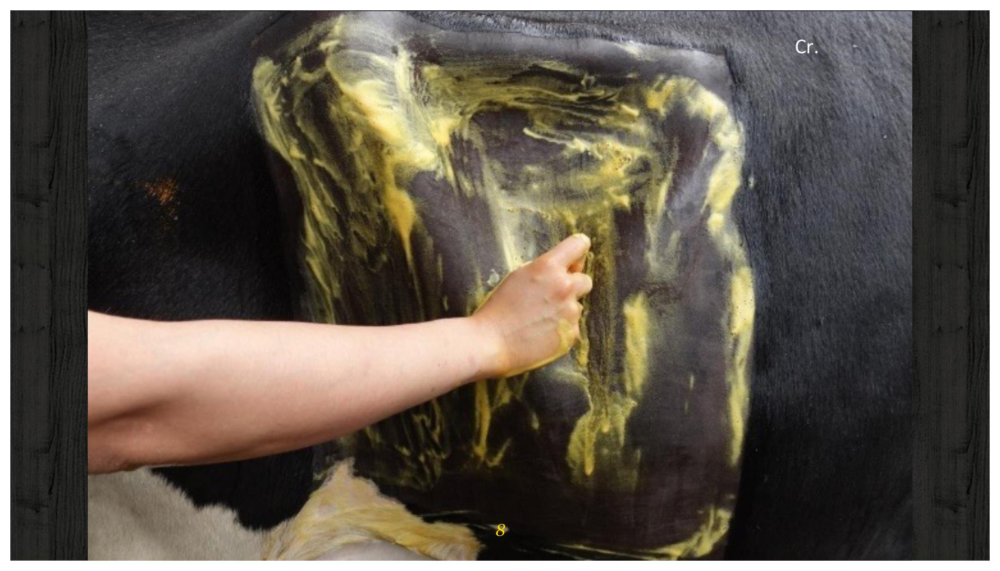
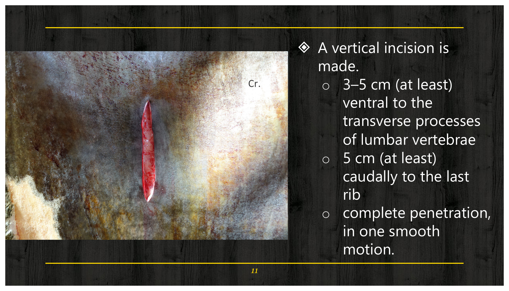
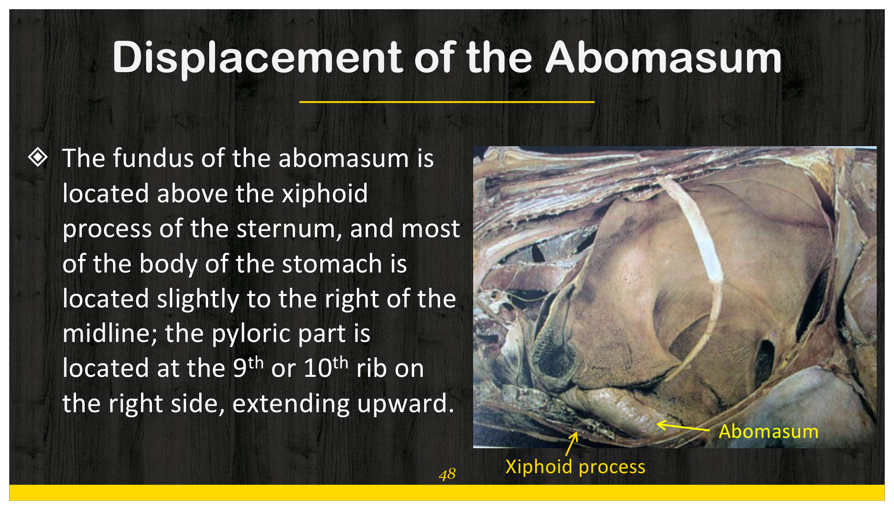
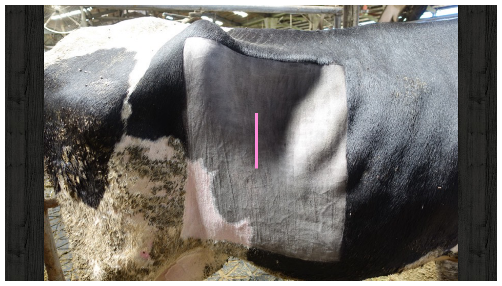
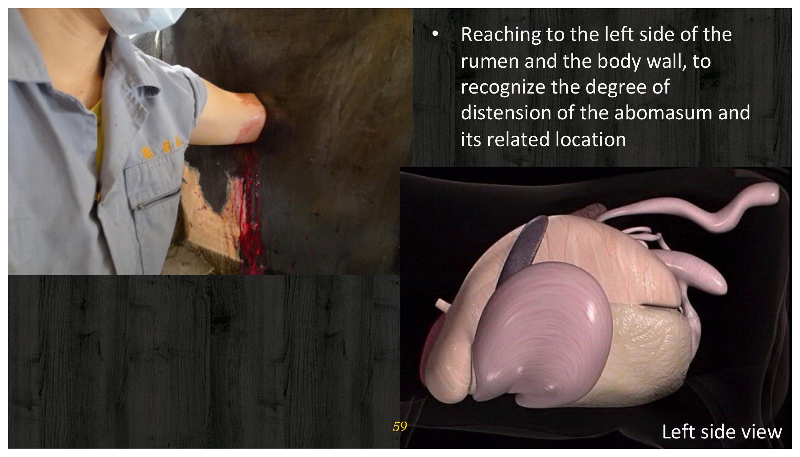
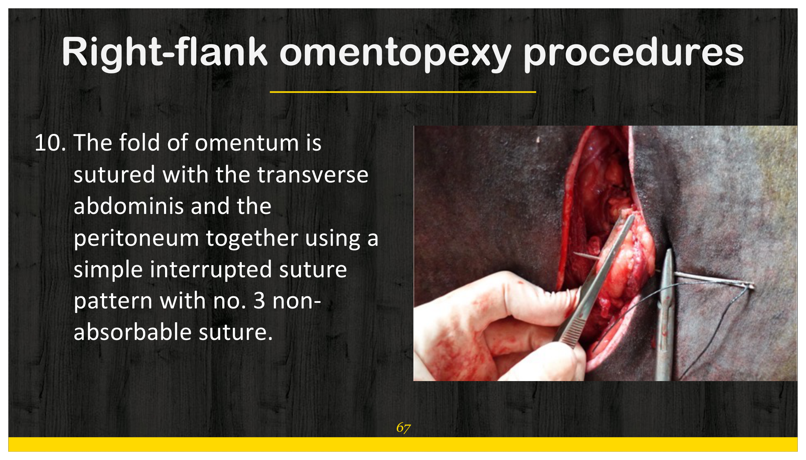
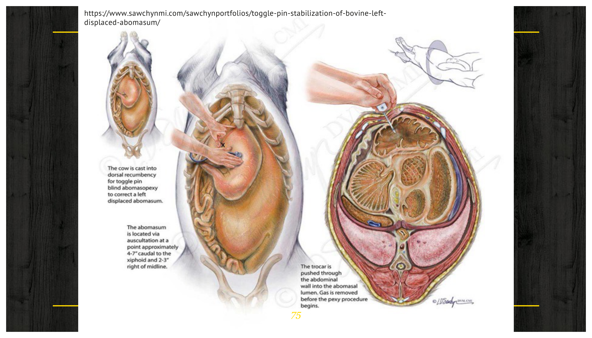
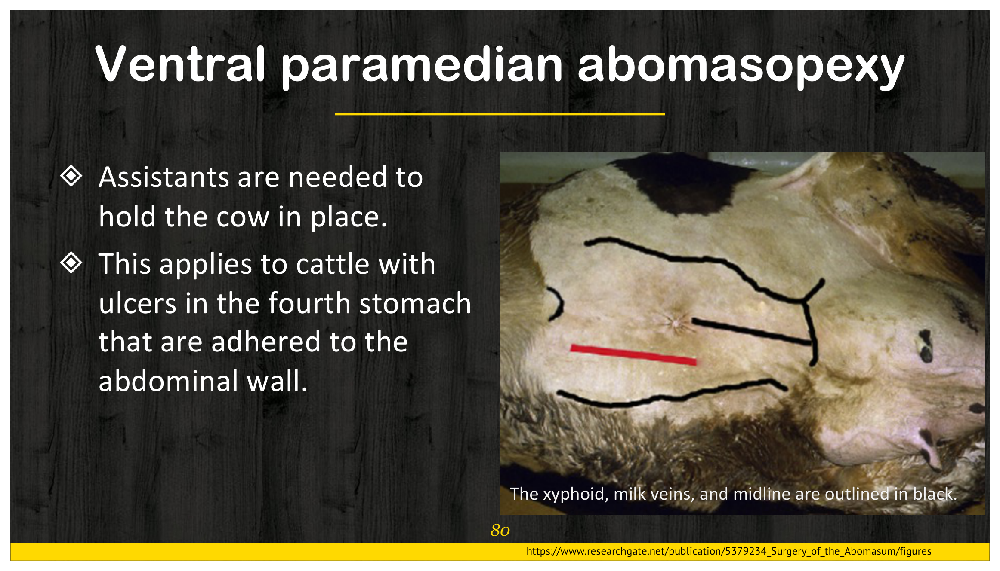

重點摘要
這份講義先建立脅腹剖腹術（flank laparotomy）這個「共同技術骨架」——左脅腹與右脅腹分別對應不同的手術目的，但備皮、麻醉、進刀層次、縫合方式都遵循同一套標準流程，之後每種術式只需要疊加「這個手術特有的步驟」。接著分兩條主線展開：①瘤胃手術——瘤胃切開術（取異物）與瘤胃瘻管造口術（做長期廔管，供營養試驗、慢性脹氣治療、瘤胃液移植），兩者都走左脅腹剖腹路徑，差異在於「切開後要不要永久造廔」；②皺胃移位（LDA／RDA）——先理解泌乳牛產後皺胃移位的病生理機轉（子宮擴張頂起皺胃、產後瘤胃下降但皺胃張力不足被壓向左上方），再比較四種手術矯正術式（右脅腹大網膜固定術、套鎖針固定術、腹腔鏡固定術、腹旁中線固定術）的操作方式、優缺點與適用情境。讀這章的訣竅是：先抓住「左脅腹＝瘤胃相關、右脅腹＝皺胃與其他腹腔臟器相關」這條分類邏輯，再依「站立 vs. 仰臥保定」「直視 vs. 盲目操作」「經濟性 vs. 精確性」這幾組取捨來記憶四種皺胃固定術的差異。點下方任一分類可直接跳到該小節。
共用技術骨架
取異物
長期廔管
四種術式比較
原始講義第一頁列出的大綱包含盲腸擴張扭轉、腸套疊、臍疝氣與膿瘍、迷走神經性消化不良、腹腔穿刺、肝臟切片、肛門直腸閉鎖、直腸脫出等主題，但實際投影片內容僅涵蓋脅腹剖腹術總論、瘤胃切開術、瘤胃瘻管造口術、以及皺胃移位的四種手術矯正術式，大綱中其餘主題本份講義未實際涵蓋。本頁僅整理講義實際涵蓋的內容，未涵蓋主題待後續取得對應講義後再補充，不在此處臆測填補。
- 左脅腹 vs. 右脅腹的適應症分類是全章的第一條分類線：左脅腹用於瘤胃切開術與瘤胃瘻管造口術；右脅腹用於大網膜固定術、幽門大網膜固定術、小腸／盲腸／結腸矯正、剖腹產與探查手術——先分清楚「左邊做什麼、右邊做什麼」，後面每個術式才不會記混。
- 瘤胃切開的縫合是「雙層縫合」的經典範例：第一層用單純連續縫合（simple continuous），第二層用內翻縫合（inverting pattern）加強密封——這組雙層縫合邏輯與內科學、其他空腔臟器縫合原則相通，是操作技術題的常考重點。
- 接觸瘤胃內容物的器械須視為污染器械、與無菌器械分開存放，是瘤胃切開術中最容易被忽略但最重要的無菌操作細節。
- 皺胃移位的病生理機轉是「兩階段」邏輯：懷孕後期子宮擴張頂起瘤胃與皺胃，使皺胃被推向前、偏左；產後瘤胃下降，若皺胃本身張力不足（atony），就會被下降的瘤胃壓向左上方，卡在左側腹壁與瘤胃之間形成 LDA。分娩本身是最重要的誘因，皺胃張力不足則是必要的前提條件。
- 高音調 ping sound 是 DA 的診斷關鍵：同時聽診＋叩診，在皺胃充氣部位上方會聽到清脆高音調的 ping 音；LDA 的 ping 音範圍可以從腹部下三分之一（第 8 肋間）一路延伸到腰旁窩，範圍相對寬廣是重要鑑別線索。
- 四種皺胃固定術的臨床選擇邏輯：右脅腹大網膜固定術是幾乎所有病例的首選（站立保定、成本低、復發率低，但無法直視皺胃）；套鎖針固定術追求經濟與速度（可用氣味或胃液 pH 確認位置，但盲目操作風險最高）；腹腔鏡固定術併發症最少、恢復最快但無法用於沾黏病例；腹旁中線固定術專門處理皺胃潰瘍沾黏腹壁的特殊病例，但仰臥保定風險（疝氣、乳房循環受損）最高。
脅腹剖腹術總論 Flank Laparotomy
脅腹剖腹術是牛隻腹腔手術最基本的進腹路徑，左右脅腹對應不同適應症，但備皮、麻醉、進刀層次與縫合原則共用同一套標準流程——是後面瘤胃切開、瘤胃瘻管造口、皺胃固定等術式共同的技術骨架。
左右脅腹剖腹術的適應症
- 瘤胃切開術 Rumenotomy
- 瘤胃瘻管造口術 Rumen fistulation
- 大網膜固定術 Omentopexy
- 幽門大網膜固定術 Pyloro-omentopexy
- 小腸、盲腸與結腸的手術矯正
- 剖腹產 Cesarean section
- 探查手術 Exploratory
術前準備與麻醉

進刀技術（垂直切口）重要

縫合關閉
| 層次 | 縫合方式 | 縫線材質 |
|---|---|---|
| 腹膜＋腹橫肌（一起縫合） | 單純連續縫合 Simple continuous | 合成可吸收縫線 |
| 腹內斜肌與腹外斜肌（分開縫合） | 單純連續縫合 Simple continuous | 合成可吸收縫線 |
| 皮膚 | 水平褥式間斷縫合 Interrupted horizontal mattress | — |
※ 縫合材質與各種縫合花紋（simple continuous、inverting pattern、horizontal mattress 等）的詳細比較，見 縫合材料與結紮技術 專頁。
術後照護
- 傷口塗抹碘軟膏，一天兩次，連續 3 天。
- 視手術情況給予抗生素。
- 術後 2–3 週可拆線。
瘤胃切開術 Rumenotomy
走左脅腹剖腹路徑，目的是切開瘤胃取出異物，核心技術重點是「雙層縫合」與「污染器械隔離」。
手術目的
移除下列部位的異物：
瘤胃或網胃異物
網胃與皺胃間的阻塞物
遠端食道異物
手術步驟
瘤胃切開術的整套流程，本質上是「先錨定防污染 → 切開探查取異物 → 雙層縫合密封 → 沖洗確認乾淨後才移除固定縫線」的邏輯鏈，每一步都是為了降低瘤胃內容物污染腹腔的風險。
瘤胃瘻管造口術 Rumen Fistulation
同樣走左脅腹路徑，但目的不是取異物，而是建立一條永久性的瘤胃通道（廔管），供研究或治療長期使用。
手術目的
營養試驗
Nutritional trials
治療慢性脹氣
Chronic bloat
瘤胃液移植給病牛
Rumen fluid transplantation
手術步驟
術後照護與長期維護
- 傷口塗抹碘液或抗生素軟膏，一天兩次，連續 4–5 天。
- 給予預防性抗生素（例如 Shotapen®）。
- 術後約 14 天：暫時移除瘻管並拆線，重新安裝瘻管與蓋子，傷口繼續塗抹碘液或抗生素軟膏、一天兩次、再連續 4–5 天。
瘤胃瘻管拆線與更換流程
長期使用的瘤胃瘻管需要定期維護，基本流程為：移除壞死組織 → 以 1% 碘液仔細擦拭傷口 → 重新裝上瘤胃瘻管，確保廔口清潔、避免感染。
皺胃移位：病因與診斷 Displacement of the Abomasum (DA)
皺胃移位（Left/Right Displacement of Abomasum, LDA/RDA）是泌乳牛常見的消化道急症，理解正常解剖位置與產後病生理機轉，是診斷與選擇手術術式的基礎。
皺胃正常解剖位置

病因：LDA 的兩階段機轉重要
最主要的誘發因子——子宮擴張與產後瘤胃下降的過程，直接推動皺胃移位的物理機轉。
必要的前提條件——若皺胃收縮力正常，即使受到瘤胃下降的推擠，也較不易被卡在左側腹壁與瘤胃之間。
若皺胃移位方向改為右側，則稱為右側皺胃移位（Right-sided Displacement of Abomasum, RDA）。
臨床症狀
- 精神沉鬱（Depressed）
- 食慾下降（完全厭食、精料攝取減少，或正常食慾與厭食交替出現）
- 糞便通常正常至偏軟（糊狀或泥狀），但糞量減少
- 泌乳量快速下降
- 因長期消化問題，體態逐漸消瘦
診斷：Ping Sound重要
同時進行聽診與叩診，在皺胃充氣部位上方會聽到清脆高音調的 ping 音。LDA 的 ping 音出現範圍可以很廣——從腹部下三分之一、第 8 肋間一路延伸到腰旁窩（paralumbar fossa）都可能聽到。
皺胃固定術式比較 Surgical Treatment of DA
四種手術矯正術式各有不同的保定方式、操作邏輯與適用情境，臨床選擇的核心是在「精確度」「成本與速度」「病患風險」三者間取捨。
四種手術選項總覽
| 術式 | 保定姿勢 | 核心特點 |
|---|---|---|
| 右脅腹大網膜固定術 Right-flank omentopexy | 站立 | 幾乎所有病例的首選；成本低、復發率低，但無法直視皺胃 |
| 套鎖針固定術 Toggle-pin abomasopexy | 仰臥 | 經濟、快速；盲目操作，可能刺穿錯誤器官 |
| 腹腔鏡固定術 Laparoscopic abomasopexy | 依術式而定 | 侵入性最低、併發症最少、恢復最快；無法用於沾黏病例 |
| 腹旁中線固定術 Ventral paramedian abomasopexy | 仰臥 | 專門處理皺胃潰瘍沾黏腹壁的病例；仰臥相關風險最高 |
右脅腹大網膜固定術 Right-flank Omentopexy重要
牛隻手術中可維持站立姿勢，且不需要直接縫合到皺胃本身（縫合的是大網膜），需要的人力較少、復發率低，是幾乎所有 DA 病例的第一線術式。缺點是無法直接視覺確認皺胃位置，有腹膜炎風險，手術部位可能水腫或感染，且無法預防 RDA 復發。



套鎖針固定術 Toggle-pin Abomasopexy
適用於經濟考量與需要快速見效的病例。牛隻保定仰臥，透過聽診與叩診確定脹氣皺胃的位置。
可透過套管嗅聞特殊氣味或測量胃液 pH 值來確認針尖確實位於皺胃內；單純型 LDA 使用此術式，48–72 小時內食慾與泌乳量即可改善。若術後食慾未見明顯改善，建議 2 天內移除縫線並改採其他手術方式。

缺點
- 可能錯過皺胃、誤刺入幽門或胃體
- 皺胃可能被固定在錯誤位置
- 皺胃液流入腹腔
- 刺穿錯誤的器官
- 損傷乳房靜脈，造成靜脈炎
- 外源或內源性污染物導致腹膜炎
腹腔鏡固定術 Laparoscopic Abomasopexy
- 侵入性較低
- 成功率高
- 併發症少
- 手術時間較短
- 術後恢復快
無法用於皺胃已發生沾黏的病例。
腹旁中線固定術 Ventral Paramedian Abomasopexy
需要助手協助保定牛隻；主要適用於皺胃潰瘍已沾黏腹壁的病例。

缺點
- 牛隻須仰臥保定
- 切口部位有疝氣或廔管形成風險
- 切口部位污染風險
- 懷孕後期下脅腹水腫可能影響手術進行
- 損傷腹壁血管可能影響乳房循環
急性或慢性支氣管肺炎、明確的肌肉骨骼損傷、懷孕後期母牛。
學習重點整理
考試／臨床實務角度整理，複習前先快速掃過本節。
練習題 Practice Quiz
涵蓋本週各章節重點，先自己作答再點「顯示答案」核對，答錯的觀念回對應章節重讀一次。
左脅腹剖腹術主要用於瘤胃切開術與瘤胃瘻管造口術；剖腹產、大網膜固定術與盲腸矯正手術皆屬於右脅腹剖腹術的適應症。
接觸瘤胃黏膜或瘤胃液的器械必須視為污染器械，應與其他無菌器械分開存放，不可混放使用，這是避免腹腔污染的重要無菌操作原則。
瘤胃切口關閉採雙層縫合：第一層以 1 號或 2 號合成可吸收縫線做單純連續縫合，第二層以類似材質做內翻縫合（inverting pattern）加強密封，降低瘤胃內容物滲漏風險。
LDA 的病生理是兩階段機轉：懷孕後期子宮擴張頂起瘤胃與皺胃，使皺胃被推向前、略偏左；分娩後瘤胃下降，若皺胃張力不足（atony），就會被下降的瘤胃壓向左上方，卡在左側腹壁與瘤胃之間形成 LDA。分娩是最主要誘因，皺胃張力不足是必要前提，兩者缺一不可。
右脅腹大網膜固定術的優勢在於牛隻可維持站立姿勢、不需直接縫合到皺胃本身（縫的是大網膜）、需要的人力較少、復發率低；缺點是無法直接視覺確認皺胃位置，且無法預防 RDA 復發。
套鎖針固定術的常見缺點包括：①可能錯過皺胃，誤刺入幽門或胃體；②皺胃可能被固定在錯誤位置；③皺胃液流入腹腔；④刺穿錯誤的器官；⑤損傷乳房靜脈造成靜脈炎；⑥外源或內源性污染物導致腹膜炎。此術式風險相對較高的原因是操作過程屬於盲目定位——僅靠聽診與叩診確定皺胃大概位置，再以套管盲目刺入，不像右脅腹大網膜固定術或腹腔鏡固定術能透過觸診或直視確認皺胃位置，因此容易發生定位錯誤相關的併發症。
(1) 不適合的術式：腹腔鏡固定術（Laparoscopic abomasopexy）不適合此病例，因為腹腔鏡固定術的限制正是無法用於皺胃已發生沾黏的病例，沾黏會妨礙腹腔鏡器械的操作與視野。
(2) 優先考慮的術式：應優先考慮腹旁中線固定術（Ventral paramedian abomasopexy），因為講義明確指出此術式專門適用於皺胃潰瘍已沾黏腹壁的病例。
(3) 保定姿勢與風險：腹旁中線固定術需要牛隻仰臥保定，並需要助手協助固定。可能的手術風險包括：仰臥保定本身的風險、切口部位發生疝氣或廔管形成、切口部位污染、若牛隻懷孕後期可能因下脅腹水腫影響手術進行、以及損傷腹壁血管可能影響乳房循環。此外若牛隻有急慢性支氣管肺炎、明確的肌肉骨骼損傷、或處於懷孕後期，則屬於禁忌症，應考慮其他替代方案。